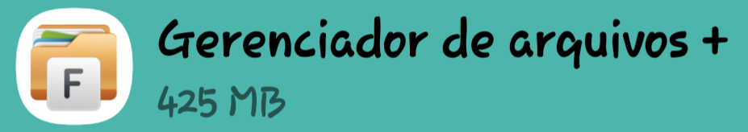

01
O que aconteceu?
Por causa desse gerenciador de arquivos aqui:
Registro
Gerenciador de arquivos

Eu cliquei sem querer no botão de excluir e perdi todos os arquivos do projeto Mulher Amparada.
Mas a usuabilidade desse app é excelente, a interface agora está mais bonita porque os pop-ups de operação de arquivos estão mais arredondados, ele move primeiro e só depois de concluído apaga o original, o que é bom!, pena que tem anúncios na parte debaixo que atrapalha, e o modo escuro não é gratis, quem acaba decidindo não pagar gasta muito mais bateria!